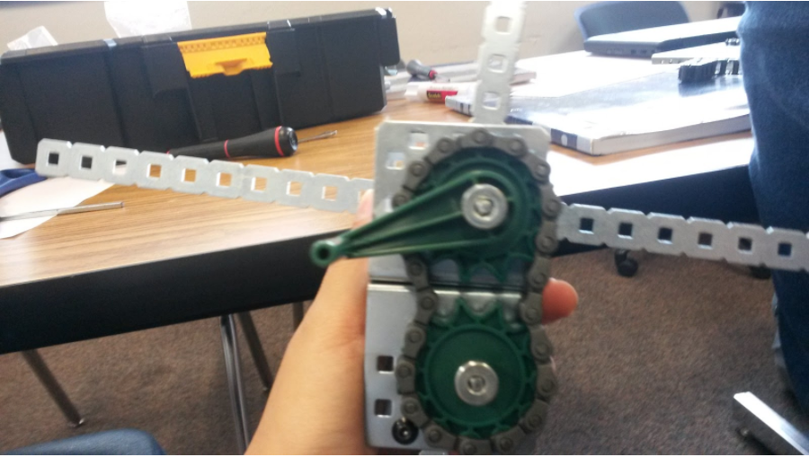

Green Energy October/10-17/2016, Robotics Class. The objective of this project was to create a model of what you think will save energy. I decided to make a portable windmill so that you can always have a small energy maker to take with you in case of an emergency. I made this by using metal parts, gears, screws, bolts, and many more parts. The process of making the model was making a rough draft on paper, getting the rough draft approve, and then start building the model. Towards the end I shrank the model so that it would be life sized.